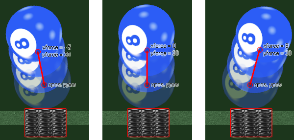

physics_apply_force(xpos, ypos, xforce, yforce)
| Argument | La description |
|---|---|
| xpos | La coordonnée x dans la pièce où la force sera appliquée |
| ypos | La coordonnée y dans la pièce où la force sera appliquée |
| xforce | la composante x du vecteur de force |
| yforce | la composante y du vecteur de force |
Retours: N / A
Lorsque vous travaillez avec la physique, vous devez appliquer non seulement la gravité aux objets, mais aussi les forces. Une force est une influence qui fait qu'un objet subit un changement de vitesse, un changement de direction ou un changement de forme, et qui est défini dans le monde de la physique de GameMaker Studio 2 la même manière que nous définissons la gravité. deux composants xforce / yforce. Il convient de noter que les forces ne sont pas appliquées au centre de masse de l'objet, mais plutôt à un point dans la pièce et qu'elles vont changer la direction et la vitesse ainsi que le couple (spin) dépendant de toute autre force qui fonctionne sur l'objet (comme la gravité). Voici un exemple d'image pour illustrer:

Dans l'exemple ci-dessus, l'objet ressort au fond a créé une force sur l'objet balle l'amenant à se déplacer dans une direction différente. La force exacte est définie par le vecteur que nous obtenons des composants xforce / yforce par rapport aux coordonnées xpos / ypos - ce qui signifie simplement que la force est calculée comme la distance de xpos / ypos à xforce / yforce en Newtons (un Newton étant défini comme la quantité de force nette nécessaire pour accélérer une masse d'un kilogramme à un taux d'un mètre par seconde au carré) et la direction est l'angle que nous obtenons de xpos / ypos à xforce / yforce. Le code d'une collision comme ci-dessus irait dans l'événement de collision de l'objet ressort et ressemblerait à celui fourni dans l'exemple ci-dessous.
NOTE: Le monde de la physique utilise des mètres pour tous ses calculs, et le ratio de pixels par mètre est défini dans l'éditeur de pièce ou en utilisant physics_world_create.
with (other)
{
physics_apply_force(x, y, 0, -30);
}
Le code ci-dessus appliquera le code à l' autre objet dans la collision avec une force de 30 Newtons et une direction.